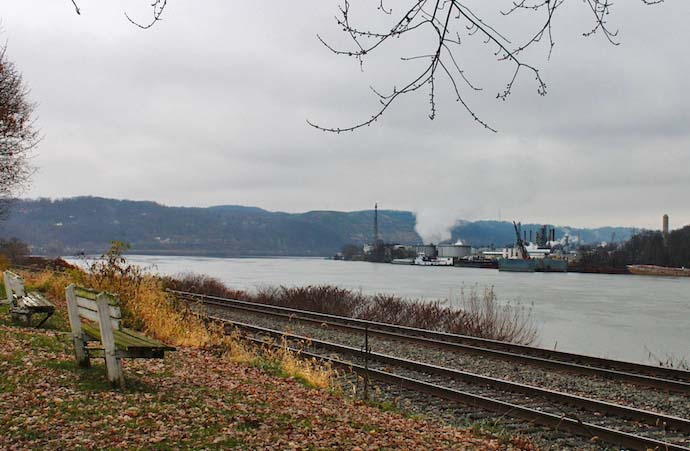

Drinking water in the pipeline
GANDHINAGAR, India – The unthinkable in this semi-arid state will start at Morbi, a water-starved Saurashtra town, where 34,000 metered connections will start providing round-the-clock drinking water to the entire town in two years.Gandhinagar town, which already has good pipelines, may be even quicker.
After the state government has made 24-hour electricity supply possible in Gujarat villages, it is now planning an encore in the water supply front also.
Read more here.
Source : The Times of India
Posted On: 2008-06-04T00:00:00
Posted By: Circle of Blue

Content Date: 2008-06-04
Download Date: 2021-05-13
Document ID: L0C04BTOR